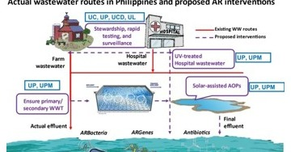
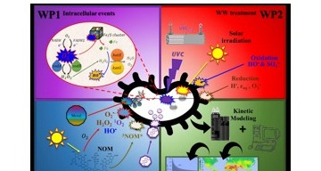
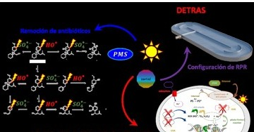
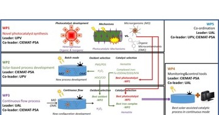
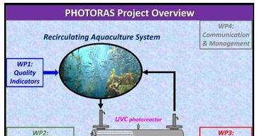
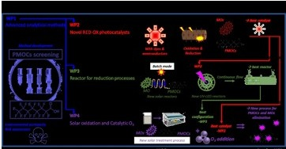
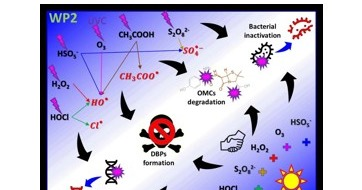

ARPHILAKE
One Health upstream interventions to reduce antimicrobial-resistance burden in Philippine lakes, combining environmental surveillance with treatment interventions.
This page presents selected funded and accepted projects, organized by scientific theme.
Theme 1 · Environmental AMR & microbial fate
These projects progressively moved antimicrobial resistance from a treatment endpoint into a mechanistic environmental-engineering problem.

One Health upstream interventions to reduce antimicrobial-resistance burden in Philippine lakes, combining environmental surveillance with treatment interventions.

Mechanistic work on bacterial susceptibility across reductive/oxidative treatment and natural attenuation, connecting intracellular stress-response biology to environmental fate.

Disinfection and decontamination of effluents against antimicrobial-resistance transmission, including light-assisted and oxidant-based treatment routes.
Theme 2 · Solar, photon-based treatment & reuse
Solar and UVC-driven systems are treated as engineering processes whose performance must be tested against microbial, chemical and operational constraints.

Novel photocatalysts and advanced solar technologies for urban wastewater reclamation, including ARB/ARGs, coliphages, microorganisms and organic microcontaminants as treatment-quality indicators.

Photon-based purification of recirculating aquaculture water, integrating UVC-AOP treatment with pathogen/ARG control, antibiotic removal and biological compatibility.
Theme 3 · Integrated tertiary treatment, materials & digital water

Advanced tertiary treatment combining reduction/oxidation processes and new photocatalytic materials for microbial targets and persistent/mobile contaminants, including PFAS.

Water-regeneration experiments, open water-quality datasets and key variables feeding machine-learning models, decision-support tools and early-warning systems.
Earlier / complementary funded work
H2020 · WP4 co-leader / leading-partner contribution on disinfection and treatment enhancement for decentralized point-of-use water systems.
Swiss National Science Foundation project applying advanced oxidation processes in field-relevant international settings.
Multiple funded international collaborations on magnetic MgO, g-C3N4, TiO2/Bi2WO6, modified Al2O3 and carbon-quantum-dot systems.